Læborg
Schwarzgrauer gestreifter
Granit mit zahlreichem Korn
Größte Höhe: 275 cm
Größte Breite: 72 cm
Runenhöhe ca.: 19-22 cm
Runeninschrift
Tue, Ravns Nachkomme,
meißelte diese Runen zum
Andenken an Thyre,
seine Königin.
9 - Læborg - Letztes Update 30.03.2025
Listennummer : DR 26 / DK SJy 37
Navidaten: 55.523155 9.115447 oder: Læborgvej 5, 6600 Vejen
Transliteration:
Seite A - rhafnukatufi : hiau : runaR : þasi aft
Seite B - þurui : trutnik : sina
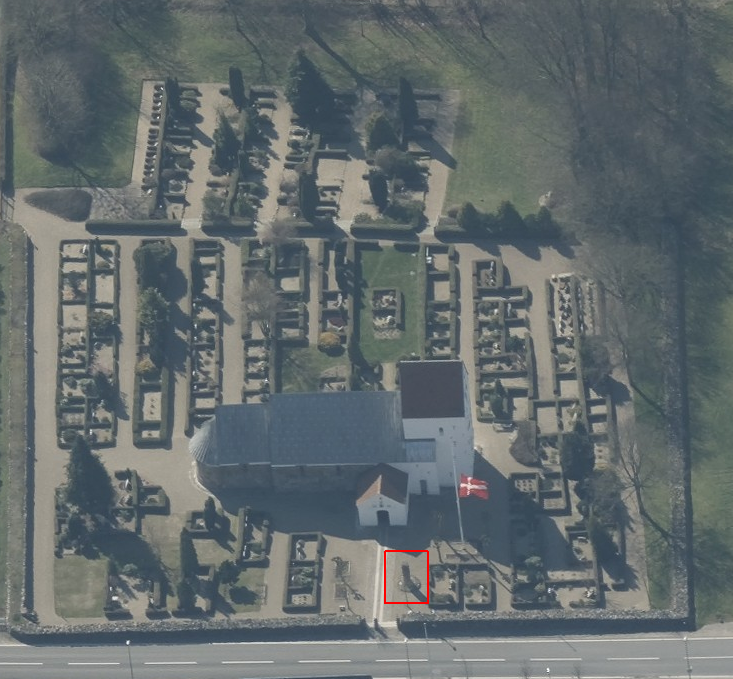
Dies ist ein Luftfoto vom 07.04.2023 von Skråfoto - Lizenz: CC BY 4.0 - das die Kirche von Læborg zeigt. Skråfoto ist eine Webanwendung, die von Klimadatastyrelsen weltweit kostenlos bereitgestellt wird. Die Aufnahmen werden seit 2017 alle zwei Jahre erneuert und neben einer Senkrechtaufnahme wird ein Schrägbild aus jeder Himmelsrichtung angeboten, das man über eine Adresssuche aufrufen kann. Den Standort des Runensteins habe ich rot eingerahmt.
21.11.2023
In dem Artikel "A
lady of leadership: 3D-scanning of runestones in search of Queen Thyra and the
Jelling Dynasty" von
Lisbeth M. Imer (*1973, Runologin am
Nationalmuseum Kopenhagen),
Laila Kitzler Åhfeldt
(*1969, Wissenschaftlerin am
Swedish National Heritage Board in
Stockholm)
und
Henrik Zedig, der am
11.10.2023 veröffentlicht wurde,
legen die Autoren ihr Forschungsergebnis vor, das sie
anhand der durchgeführten 3D-Scans
zur Untersuchung von Runenschnitztechniken
(Computer-Rillenspurenauswertung), kombiniert mit Analysen der
Rechtschreibung und Sprache erlangt haben,
und kommen darin zu dem Schluss, dass der Stein
Jelling 2
und der Stein von
Læborg
beide durch die Hand des Schnitzers Ravnunge-Tue entstanden
sind, der sich ja hier in der Inschrift von
Læborg
selbst als Runenmeister nennt.
Die Ergebnisse legen demnach nahe, dass
Thyra
eine entscheidende Rolle bei der Entstehung des dänischen Staates spielte.
In dem Bericht heißt es u.a.: "Die Erwähnung von
Thyra
auf nicht weniger als vier Runensteinen ist im Dänemark
der Wikingerzeit beispiellos. Im Vergleich dazu ist es bemerkenswert,
dass
In ihrem 2000
erschienenen Buch mit dem Titel "The
Viking-age rune-stones: custom and commemoration in early medieval Scandinavia"
bringt
Birgit
Sawyer
(*02.04.1945 -
07.05.2016, schwedische Historikerin) ab der S. 158 ff.
den "Excursus
- The tug-of-war over Thyre". Darin
plädiert sie für ein radikales Umdenken in
Bezug auf die Inschriften der
Runensteine im Umkreis
von
Jelling.
Birgit
Sawyer
erklärte danach mehrfach, so z.B.
in ihrem Artikel "Thyre in
Jelling,
Læborg
und
Bække"
in dem Buch "Die Deutschen und das Europäische
Mittelalter - Die Welt der Wikinger
- 2002 - S. 376 ff.",
dass es nach ihren Überlegungen am plausibelsten sei, dass
Ravnunga-Tue
der 2. Ehemann
von
Thyra
(nach ihrer ersten Ehe mit
Dieser These von
Birgit
Sawyer folgt meines Wissens in der aktuellen Runen-Forschung
niemand!
Übrigens wurde nach
Thyra
auch ein
Asteroid
benannt, der am 06.08.1871 durch den
US-amerikanischen Astronomen
James
Craig Watson entdeckt wurde!
Nun zur Historie - Dieser Runenstein wird erstmals 1638 schriftlich erwähnt. Durch den damaligen Gemeindepfarrer Christen Hanssøn wurde nämlich Bericht an Ole Worm (*13.05.1588 - 31.08.1654, Arzt, Universalgelehrter und der Begründer der Runologie)
 Bildquelle:
Digitale Sammlung der Königlichen Bibliothek Kopenhagen -
Lizenz:
Public Domain
Bildquelle:
Digitale Sammlung der Königlichen Bibliothek Kopenhagen -
Lizenz:
Public Domain
erstattet. Dieser hatte den dänischen König Christian IV. (*12.04.1577 - 28.02.1648)
 Bildquelle:
Wikipedia - Lizenz:
Public Domain
Bildquelle:
Wikipedia - Lizenz:
Public Domain
im Jahre 1626 dazu bewegt per Rundschreiben alle dänischen Pfarrer aufzufordern, Runensteine, alte Gräber und sonstige Altertümer in ihrem Sprengel zu melden. Die Rückmeldung von Hanssøn bezüglich des Runensteins findet sich in "Ribe Stifts Beskrivelse 1638" - gesammelt von O.Nielsen, 1875, Kopenhagen - als Sonderdruck in "Danske Samlinger 2, Band 4" erschienen. Seine kurze Mitteilung findet sich dort auf S. 111 (S. 113 in der pdf-Datei) - "Wed Læborig kierckegaard findis en stor steen med runebogstaffuer paa baade siider" - übersetzt: "Im Læborg Kirchhof findet sich ein großer Stein mit Runenbuchstaben auf beiden Seiten."
In dem darüber entstanden Werk von 1643 - "Danicorum Monumentorum Libri Sex, Hafniae" findet sich dann die erste bildliche Darstellung (siehe unten).
Der Runenstein befand sich schon damals in dem gleichen Zustand wie heute, übersäht mit Sprenglöchern. Das kleine Stück, mit dem Anfang von Thyres Namen, das 1888 wiedergefunden wurde, war bereits verschwunden, was entweder bei den Spaltversuchen oder noch früher geschah. Es kam bei der Umsetzung der Kirchhofeinfriedung zum Vorschein und wurde wieder eingepasst.
Laut den alten Berichten wurde der Stein auf einem Feld, ca. 600 m nördlich der Kirche von Læborg gefunden. Er lag Seite an Seite mit einem anderen länglichen, glatten Stein, der mehr als doppelt so groß war. Dieser Stein lag in einer Grube, die entstanden war, als Christian Friis (*4. November 1581 auf Gut Krastrup in Farstrup - 01. Oktober 1639, dänischer Adliger und königlicher Kanzler)
 Bildquelle:
Wikipedia - Lizenz:
Public Domain
Bildquelle:
Wikipedia - Lizenz:
Public Domain
um 1640 hier graben ließ. Er wollte den Stein wenden lassen, in der Hoffnung auch hier Runen zu finden. Es blieb jedoch bei einem Versuch.
Später entstand der Gedanke, dass der Runenstein von dem größeren Stein abgeschlagen wurde. Möglicherweise gehörten die Steine zusammen, da die Steinart sehr selten ist. Prof. Ludv. F. A. Wimmer (*07.02.1839 - 29.04.1920, Philologe und Runenforscher - link-LIVES)
 Bildquelle:
Fotografie zw. 1877-1900 von Fotograf Hansen & Weller
-
Det Kgl. Biblioteks billedsamling - Lizenz:
Public Domain
Bildquelle:
Fotografie zw. 1877-1900 von Fotograf Hansen & Weller
-
Det Kgl. Biblioteks billedsamling - Lizenz:
Public Domain
der noch beide Steine um 1876 sah - siehe Zeichnung unten - konnte jedoch keine Passstelle finden.
aus: Wimmer (siehe unten) S. 40 - Zeichnung von Magnus Petersen
Es ist deshalb davon auszugehen, dass der Runenstein auf dem Feld stehend errichtet worden war, unmittelbar beim alten Heerweg, was auch der ideale Platz für einen Runenstein war, weil dort eben sehr viele Menschen daran vorbeikamen.
Anfang 1821 wurde der Runenstein zur Læborg Kirche verbracht und liegend in der Kirchhofmauer angebracht. Von dort wurde er 1935 auf einen gemauerten Sockel überführt und das bereits erwähnte kleine Stück eingepasst. Heute steht der Stein innerhalb eines Steinkreises vor der Kirche.
Die Inschrift, die aus zwei senkrechten Bändern besteht und sich auf zwei Seiten des Steines findet, wird in das 10. Jahrhundert datiert. Die beiden Runenbänder schließen jeweils mit einem stilisierten Thorshammer ab, wie er von wikingerzeitlichen Silberamuletten her bekannt ist. Die Inschrift beginnt auf der Seite A von unten nach oben. Darüber ist ein Thorshammer geritzt. In dem rechts davon befindlichen Runenband geht es von oben nach unten weiter und endet auch hier mit einem Thorshammer. Die Inschrift liest sich demnach bustrophed (abwechselnde Schreibrichtung).
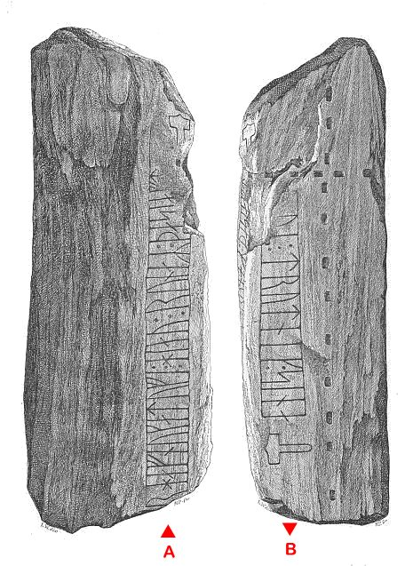
Bildquelle: Zeichnung von Magnus Petersen (*04.09.1827 - 01.02.1917, Archäologischer Zeichner und Restaurator)Über den Inhalt der Inschrift wird der Stein oft mit Königin Thyra und den Jelling Monumenten in Verbindung gebracht. Da die Runen für das Wort Königin aber auch Frau bedeutet haben können, und der Name Thyre damals nicht selten war, ist ein solcher Zusammenhang als unsicher anzusehen.
Ole Worm - Danicorum Monumentorum Libri Sex, Hafniae, 1643, S. 439 - Diese erste bildliche Darstellung, eine für damalige Verhältnisse sehr getreue zeichnerische Wiedergabe des Runensteins, erhielt Ole Worm von Laurids Bording (*1617 - 20.03.1675, Historiker) zugesandt.
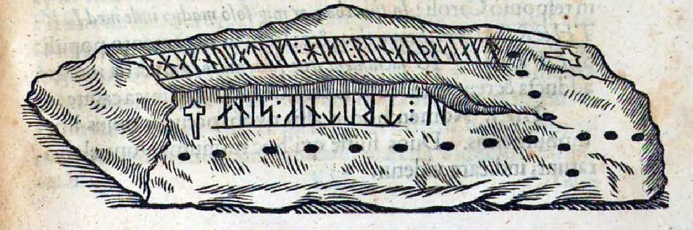
Über Internetrecherchen fand ich am 14.11.2021
auf die Webseite "https://www.brejl.dk/blochM.html".
Dort findet sich die Abhandlung "Uddrag af Ribe Stift Bispeembedet
Præsteindberetninger til biskop J. Bloch 1766-1769 herred M - T C 4-774",
also Berichte der örtlichen Pfarrer zu den Altertümern in ihrer Gemeinde an den
damaligen Bischof Jørgen Carstens Bloch (*12.06.1717 - 08.01.1773, Bischof im Ribe
Stift ab 1764 bis zu seinem Tod). Er versandte durch seine Propstei am 15. November
1765 einen Befehl an alle Priester der Diözese eine Beschreibung der Kirche und
der Pfarrei vorzulegen. Die Antworten wurden im Jahr 1766 eingereicht. Am
18.
November 1767 verschickte der Bischof einen neuen Brief mit einem
Fragebogen mit
121 Fragen, die in wenigen Jahren beantwortet wurden.
Die Berichte wurden am
12. Mai 1930 von der Domschule Ribe dem
Nationalarchiv in Viborg übergeben. Sie
alle tragen den Stempel BSR, was wahrscheinlich Bischof der Diözese (Stift) Ribe
bedeutet.
Zur Region "Vejen og Læborg sogne" wird nun dort unter Nummer 6 "Antikviteter" angeführt:
"Der findes en runesten ved Læborg kirke, men bogstaverne er ganske ukendelige af ælde, men salig Worm har i sin 5te bog pag. 439 udtydet dem således....". Darunter ist diese Zeichnung abgebildet:
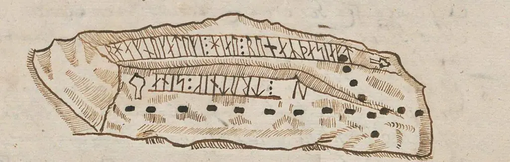
Unter der Zeichnung ist vermerkt:
"Provsten Peder Ussing mener, at stenen skulle have været henført til Brørup kirke, hvor 3 brødre: Eskild, Thue og Malte siges at være begravede. En skribent B. Grauer omtaler også stenen pag. 22, men er af en anden mening. Underskrevet Vejen præstegård den 20. januar 1768 af Hans C. Fog."
Übersetzt: "Der Propst Peder Ussing glaubt, dass der Stein der Kirche von Brørup zugeschrieben werden soll, wo 3 Brüder: Eskild, Thue und Malte begraben sein sollen. Auch der Autor B. Grauer erwähnt den Stein pag. 22, ist aber anderer Meinung. Signiert Vejen Pfarrhaus 20. Januar 1768 von Hans C. Fog."
Diese Zeichnung entspricht nahezu der Zeichnung in dem Werk von Ole Worm (siehe oben). Die beiden Thorshammer sind aber z.B. gänzlich anders skizziert. Mit dem Betreiber der o.a. Webseite, Erik Brejl, hatte ich e-Mail Kontakt im Hinblick auf den Urheber. Er meint, der örtliche Pfarrer muss von dem Metallschnitt Worms Kenntnis gehabt und den Stein dann nachgezeichnet haben. Na ja, immerhin lagen da auch schon mehr als 130 Jahre dazwischen. Die Zeichnung sei aber auch auf dem gleichen Blatt Papier wie die Unterschrift des Pfarrers, so dass er es selbst gezeichnet, oder vielleicht nur abgepaust hat.
In dem Werk "Olai Wormii Et Ad Eum Doctorum Virorum Epistolae" von 1751 wird die Vita des Universalgelehrten Ole Worm von Thomas Bartholin und latinisiert Thomas Bartholinus (* 20. Oktober 1616 in Kopenhagen; 4. Dezember 1680 ebenda, dänischer Arzt, Anatom und Theologe)
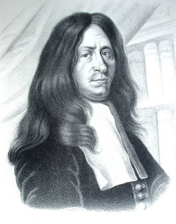
Bildquelle: Wikipedia - Lizenz: Public Domainbeschrieben. Im Band II berichtet er dann über den Briefverkehr zwischen Ole Worm und einigen Gelehrten seiner Zeit. Ab der S. 856ff. bringt er über den brieflichen Austausch von Ole Worm mit Laurentio Bordingio (Laurids Bording) in lateinischer Sprache.
Im Jahre 1654 wurde durch Johannes Meier (*um 1606 - ca. 1660 - Lehrer und Verfasser) in seiner handgeschriebenen "Liber monumentorum Danicorum, qvi monumenta Danica Olai Wormii partim emendat partim locupletat" über den Runenstein berichtet (Blatt 31) - Erhalten in der Königlichen Bibliothek in Kopenhagen - GKS 2371 kvart. Bei meinem Besuch am 26.09.2022 durfte ich diese Handschrift (nach Online Vorbestellung) in Händen halten und eingehend fotografieren.
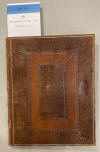 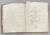 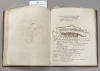
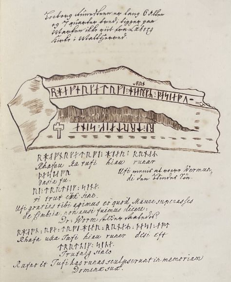
 Bildquelle:
Wikipedia - Lizenz:
Public Domain
Bildquelle:
Wikipedia - Lizenz:
Public Domain
hinzugefügt worden sein. Text und Zeichnungen der Handschrift - auch im Zusammenspiel - sind ansehnlicher ausgeführt als in NKS 799.
In der Königlichen Bibliothek in Kopenhagen hat sich von Johannes Meier aber auch noch eine zweite Handschrift erhalten - NKS 799 kvart - Joh. Mejeri Monumenta Runica in Dania (pdf-Datei anhand eigener Fotos von mir erstellt).

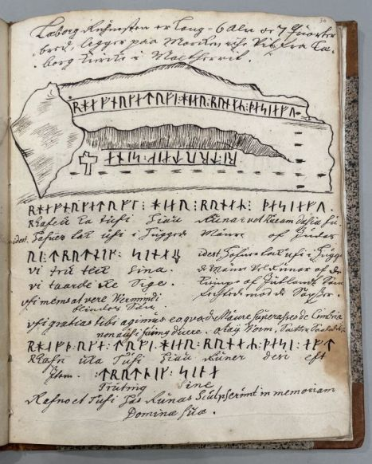
Deren Entstehungsdatum ist nicht bekannt. Die Zeichnung findet sich auf der S. 30 - Papier - 44 Blatt, Blatt 41-44 unbeschrieben, aus dem 18. Jahrhundert, vormals Nr. 70 in der Manuskript Sammlung von Peder Frederik Suhm (*18.10.1728 - 07.09.1798)
 Bildquelle:
Wikipedia - Lizenz:
Public Domain
Bildquelle:
Wikipedia - Lizenz:
Public Domain
Es handelt sich um
ein Büchlein mit einfachem Pappeinband, der Buchrücken ist aus Leder und
verstärkte Ecken aus Leder weist der Buchdeckel auf. Es hat die Maße: H: ca. 20
cm / B: ca. 17 cm / D: ca. 1,5 cm. Zu den einzelnen Zeichnungen im Büchlein
wurde ein einfacher Maßstab abgebildet.
Bei beiden Exemplaren
weist immer das rechte Blatt der Doppelseite in der oberen Ecke eine mit
Bleistift geschriebene Seitenzahl auf. Diese beiden Werke sind Abschriften von
früheren Werken, die die Zeit nicht überdauert haben.
Vielleicht sind sie in Kopenhagen beim Großbrand von 1728
vernichtet worden, als neben zahlreichen privaten Beständen auch ca.
35.000 Bücher der Kopenhagener Bibliothek ein Raub der Flammen wurden!
Die
GKS 2371 kvart soll laut
Prof. Ludv. F. A. Wimmer
(*07.02.1839 -
29.04.1920, Philologe und Runenforscher
-
link-LIVES)
Bildquelle:
Fotografie zw. 1877-1900 von Fotograf Hansen & Weller
-
Det Kgl. Biblioteks billedsamling - Lizenz:
Public Domain
und seinen Infos von Christian Walter Bruun (*10.12.1831 - 28.02.1906, Königlicher Oberbibliothekar - link-LIVES)
 Bildquelle: Fotografie
um 1880 von Fotograf J. Petersen
(*19.03.1829 -
01.02.1905) -
Det Kgl. Biblioteks billedsamling - Lizenz:
Public Domain
Bildquelle: Fotografie
um 1880 von Fotograf J. Petersen
(*19.03.1829 -
01.02.1905) -
Det Kgl. Biblioteks billedsamling - Lizenz:
Public Domain
von
Niels Foss selbst abgeschrieben worden sein. Er hat die Texte laut
den Studien von
Erik Moltke
(*04.04.1901 - 19.10.1984, Runologe, Historiker)
offenbar überarbeitet, verkürzt oder geändert und seine eigene
Orthografie eingebracht (z.B. alt: haffuer - bei Foss: haver / tyck/tyk /
kircke/kirke / oc/og u.a.).
In der
NKS 799 kvart hingegen steht auf der Seite 37 links unten "Niels
Knudsen Jerne" und seine Handschrift lässt vermuten, dass er die
gesamte Abschrift angefertigt hat. Er war offenbar ein professioneller Schreiber
und könnte mit dem Niels Knudsen identisch sein, der
1728 "Skriverkarl" auf dem Holmen (Stadtviertel von
Kopenhagen) war, also ein Mann der schnell viele Texte schreiben und liefern
konnte. Er wurde am 08.11.1737 zum "ekvipageskriver"
ernannt. Es scheint dass er sich entgegen
Niels Foss sehr eng an das Original gehalten hat.
Offenbar gab es laut dem Katalog über die Büchersammlung
von
Peter
Hansen Resens (*17.06.1625 -
01.06.1688)
 Bildquelle:
Wikipedia
- Lizenz:
Public Domain
Bildquelle:
Wikipedia
- Lizenz:
Public Domain
"Bibliotheca
Regiæ Academiæ Hafniensi donata" Hafniæ (Kopenhagen) von
1685 - siehe
S. 273 - früher noch ein drittes Werk von
Johannes Meier mit dem Titel "Johan. Meieri
liber MS. de Monumentis Runicis sive antiqvis Danicics".
Quelle:
Erik
Moltke -
Jon Skonvig og de andre runetegnere. Et bidrag til runologiens historie i
Danmark og Norge I-II,
1956-58
Band 2
-
Kapitel 13
Zwischen Montag, 26.09.2022, und Mittwoch, 28.09.2022, habe ich in der Königliche Bibliothek - Den sorte Diamant - in Kopenhagen - u.a. diese beiden alten Handschriften nach Online-Vorbestellung zur Ansicht erhalten. Ich durfte mir Aufzeichnungen machen, sie aber auch uneingeschränkt fotografieren. Ich habe sie mit dem Smartphone komplett als Doppelseiten fotografiert und daraus jeweils eine pdf-Datei erstellt. Vielleicht hat ja jemand Bedarf an diesen seltenen Ausgaben, die aufgrund ihres Alters keinem Urheberrrecht mehr unterliegen.
Peder Hansen Resen (*17.06.1625 - 01.06.1688, Jurist und Historiker) - Er hat mit dem von ihm über 20 Jahre gesammelten Material das großartige Werk "Atlas Danicus", bestehend aus letztlich 39 Folianten, geschaffen. Nur geringe Teile wurden aber schon zu seiner Lebzeit gedruckt. Die Folianten wurden wenige Jahre nach seinem Tod 1692 an die Königliche Bibliothek Kopenhagen übergeben. Aufbewahrt wurden sie auf dem Dachboden der Trinitatis Kirche. Dort wurden sie fleißig studiert, abgeschrieben und zeitweise ausgeliehen. Leider wurde dann ein Großteil davon beim Kopenhagener Großbrand 1728 zerstört. Es hat sich neben einigen Originalseiten - siehe Arnamagnäanische Sammlung - AM 359 fol. / AM 360 fol. / AM 361 fol. und AM 362 fol. (digitalisiert) - nur eine (verkürzte) Abschrift und außerdem Kupferstiche von etwa 200 Städteansichten aus der Vogelperspektive erhalten. Originale dieser AM 359/360/361 fol sind über die Universität Kopenhagen - Institut for Nordiske Studier og Sprogvidenskab (NorS) - AM 359 fol / AM 360 fol / AM 360 fol (Karten) / AM 361 fol - in sw abrufbar. Eine zweite (verkürzte) Ausgabe war von Vincent Lerche (*04.04.1666 - 28.07.1742, Jurist, Architekt) beauftragt worden, diese wurde aber beim Brand von Schloss Christiansborg im Jahr 1794 vernichtet.
In der Königlichen Bibliothek in Kopenhagen wird seit 1803 in der Sammlung Uldall (186 folio) diese einzige verbliebene Ausgabe, die in den 1750er Jahren durch den Hofbaumeister Laurids de Thurah (*04.03.1706 - 06.09.1759, dänischer Architekt, Baumeister, Architekturhistoriker und Topograf)
 Bildquelle:
Wikimedia - Lizenz:
Public Domain
Bildquelle:
Wikimedia - Lizenz:
Public Domain
aus verstreuten Resten des Atlas Danicus in 7 Bänden rekonstruiert worden war, aufbewahrt:
Wie diesem Titel zu entnehmen ist, gehörte dieses Exemplar vormals Adam Gottlob Graf von Moltke (*10.11.1710 - 25.09.1792, Staatsmann, Diplomat)
 Bildquelle:
Wikimedia - Lizenz:
Public Domain
Bildquelle:
Wikimedia - Lizenz:
Public Domain
Nach dessen Tod erwarb Herman Treschow (*11.12.1739 - 02.05.1797, Professor für Theologie, Pfarrer) diese Ausgabe. Peter Uldall (*29.06.1743 - 11.11.1798, Jurist, Theologe)
 Bildquelle:
Wikimedia - Lizenz:
Public Domain
Bildquelle:
Wikimedia - Lizenz:
Public Domain
wiederum kaufte sie für 170 Rigsdaler (Rigsdaler zu 24 Skilling - damals 1 ½ Mark) nach dessen Ableben. Er hatte aber nicht lange Freude daran, denn er starb ein Jahr später an einem Schlaganfall. Sein Sohn, Justizrat W. A. Uldall, schenkte diese Ausgabe der Kgl. Bibliothek im Jahr 1803, wo dieses großartige Werk noch heute verwahrt wird (Ein Band hat übrigens die Größe H/B/D von 40 cm x 29,5 cm x 9,5 cm).
Im Atlas VI. ist auf der Seite 765ff. ein Eintrag / Zeichnung vom Runenstein enthalten, die ich am 28.09.2022 vor Ort fotografieren durfte.


#/media/Datei:Fotoreproductie_van_een_schilderij,_voorstellende_een_portret_van_Christian_Friis_til_Kragerup_Christian_Friis_(til_Kragerup)_(titel_op_object),_RP-F-2001-7-742-16.jpg){kind=link}


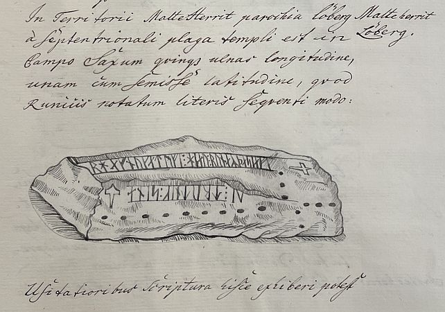
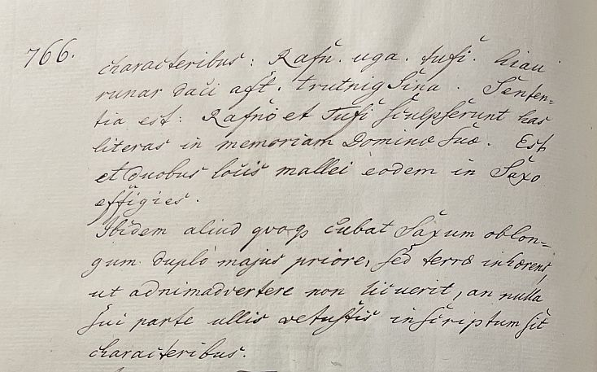
Textpassage aus S. 765 übersetzt: "Malt Harde - Læborg - Im Bezirk Malt in der Gemeinde Læborg gibt es auf dem Feld nördlich der Kirche einen Stein, der fünf Ellen lang und eine Elle breit ist und mit Runen folgendermaßen beschrieben wird:
Zeichnung
In gebräuchlicherer Schrift lässt sich die Inschrift S. 766
wie folgt wiedergeben: Rafn uga tufi hiau runar dasi aft trutning sina. Das
bedeutet: Rafn und Tufe haben diese Buchstaben zum Gedenken an ihre Frau
eingeritzt. An zwei Stellen auf demselben Stein ist außerdem die Abbildung eines
Hammers zu sehen.
An derselben Stelle befindet sich noch ein weiterer
länglicher Stein, der doppelt so groß ist wie der erste, doch dieser steckt im
Boden, sodass nicht zu erkennen ist, ob er auf einer seiner Seiten mit antiken
Buchstaben beschrieben ist."
Aus dem Lateinischen ins Dänische übersetzt in "Atlas Danicus VI D Ribe Stift, udgivet af Susannen Lykke Nielsen, 1987, S. 152-153", worüber ich hier eine Übersetzung ins Deutsche vorgenommen habe
Im Jahr 1759 brachte Hans de Hofman (*10.07.1713 - 03.02.1793, dänischer Politiker und historischer Sammler)
 Bildquelle:
Wikipedia - Lizenz:
Public Domain
Bildquelle:
Wikipedia - Lizenz:
Public Domain
Band IIII seiner 11-bändige Ausgabe "Samlinger af Publique og Private Stiftelser, Fundationer og Gavebreve, som Forefindes udi Danmark og Norge" heraus (zw. 1755 und 1780). Der Inhalt basiert auf einer Vielzahl von Berichten von Pfarrern (Præsteindberetninger) aus dem Jahr 1754. In diesem Band IIII findet sich auf S. 593 eine Anmerkung zu Læborg: "...Om bemelte Tue findes en Steen ved Leeborg Kirke, hvorom anføres i Wormii Monument Liber 5 p. 439." - Übersetzung: "...über den erwähnten Tue findet sich ein Stein bei der Læborg Kirche, über den in Worms Monumenta, 5. Buch, S. 439, berichtet wird."
Hofman war seit 1759 Oberbürgermeister von Fredericia und wurde im Jahre 1773 der letzte Bezirksgouverneur von Koldinghus. Er war auch Schwager von Erik Pontoppidan. Nach dessen Tod im Jahre 1764 hat er den Teil 4-6 des "Den danske Atlas" zu Ende geführt (1768-74).
Auch Erik Pontoppidan (der Jüngere, *03.09.1698 - 20.12.1764)
 Bildquelle:
Wikipedia - Lizenz:
Public Domain
Bildquelle:
Wikipedia - Lizenz:
Public Domain
macht in seinem Werk von 1768 "Den Danske Atlas" - Band V - Cap. VII., S. 693, (5e) (= S. 21 in der pdf-Datei) Ausführungen zu der Existenz des Runensteins und verweist auf Ole Worm - Monumentorum Danicorum Libri Sex - S. 439 - "Norden for Leborg Kirke en Runesteen, se Wormii Mon. pag. 439".
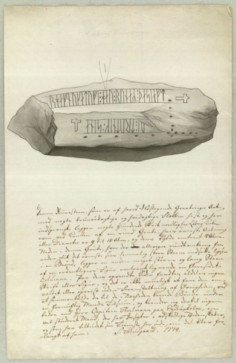
Der digitalen Sammlung des Nationalmuseums Kopenhagen entnommen - Lizenz: Public Domain
Diese Skizze des Runensteines von Søren Abildgaard (*18.02.1718 - 02.07.1791, Zeichner, Kupferstecher und Geologe)
 Bildquelle:
Jellingprojektet - Lizenz:
Public Domain -
http://www5.kb.dk/images/billed/2010/okt/billeder/object444188/da/
Bildquelle:
Jellingprojektet - Lizenz:
Public Domain -
http://www5.kb.dk/images/billed/2010/okt/billeder/object444188/da/
stammt aus dem Jahr 1774. Im Original ist sie 25 x 38 cm groß. Unter der Zeichnung steht dieser Text:
"Denne Runesteen, som er af haard Ildslagende Graabierges Art med nogle brunrødagtige og hvidagtige Flækker hist og her indsprængt, ligger nogle hundrede Skrit nordlig fra Læborg Kirke oven ved Kanten af en rund Grube, hvis øverste Aabning eller Diameter er 9 til 10 Alen, og dens Dybde omtrent 4 Alen. Neden i denne Grube, hvor der allevegne rundt omkring fra neden til det øverste sees temmelig store Steen indsatte ligesom i en Brønd, ligger en anden og meget større og lang Steen af en ordentligere Figur omtrent lignende en fleresidet Columne. Paa dens opvendte Sider fandtes aldeles ingen Skrift eller Figur, og det er ikke mueligt at faae den omvæltet eller opreist uden Foranstaltning af Øvrigheden, ved at sammenkalde der til de i Nærheden boende Bønder under en fornuftig Mands Tilsiun, og kiender ieg dertil ingen bedre end Herr Capitain Thelmann paa Endsrupholm, en velstuderet Mand, der har Insigter i adskillige Videnskaber, og som har tilbudet sin Tieneste her ude, om det blev forlangt af ham. S: Abildgaard. 1774."
Übersetzung: "Dieser Runenstein, ein harter Grabstein mit hier und da eingestreuten braun-rötlichen und weißlichen Flecken und Sprenglöchern, liegt ein paar hundert Schritte nördlich von der Kirche von Læborg am Rand einer runden Grube, deren obere Öffnung oder Durchmesser beträgt 9 bis 10 Ellen und seine Tiefe etwa 4 Ellen. Unten in dieser Grube, wo man rundherum von unten bis oben einen ziemlich großen Stein sehen kann, der wie in einem Brunnen eingelassen ist, liegt ein anderer und viel größerer und langer Stein von regelmäßigerer Form, ungefähr wie eine vielseitige Säule. Auf seinen umgebogenen Seiten war absolut keine Schrift oder Figur, und es ist nicht möglich, ihn ohne behördliche Maßnahmen umzuwerfen oder aufzurichten, indem man die in der Nähe lebenden Bauern unter der Aufsicht eines vernünftigen Mannes zusammenruft, und ich weiß keinen Besseren als Herrn Hauptmann Thelmann in Endsrupholm, ein gebildeter Mann, der Einblicke in mehrere Wissenschaften hat und der seine Dienste angeboten hätte, wenn es von ihm verlangt worden wäre."
Søren Abildgaard hat in seinem Tagebuch X, 1774, Seite 35, ergänzende Aufzeichnungen vorgenommen.
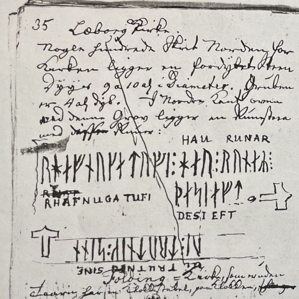

Seine Tagebücher befinden sich heute im Antiqvarisk-Topografisk Arkiv in Kopenhagen. Dies ist die Fotografie einer Kopie, die auch dort vorgehalten wird und die ich im Archiv am 28.09.2022 fertigen durfte.
Diese Zeichnung und die Notiz zur Inschrift von Martin Friedrich Arendt (1773-1823, Deutscher Botaniker und Altertumsforscher)
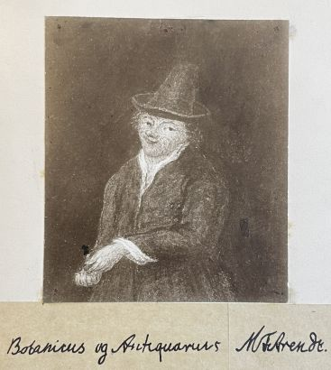
Bildquelle: Eigenes Foto aus seiner Hinterlassenschaft im Antikvarisk -Topografisk Arkiv - Public Domaindatiert vom 12.08.1811, die im "Antiqvarisk-Topografisk Arkiv" in Kopenhagen aufbewahrt wird, durfte ich bei meinem Besuch am 27.09.2022 fotografieren.
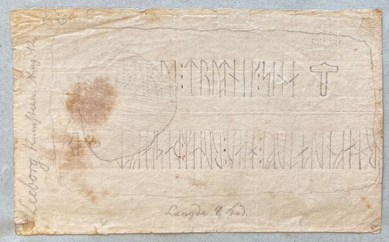
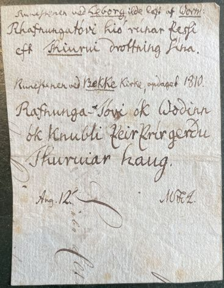
Von Finnur Magnusson (dänisch auch Finn Magnusen; * 27. August 1781 in Skálholt/Island; 24. Dezember 1847 in Kopenhagen, isländischer Philologe und Archivar - link-LIVES)
 Bildquelle:
Wikimedia - Lizenz:
Public Domain
Bildquelle:
Wikimedia - Lizenz:
Public Domain
findet sich eine Abhandlung in Antiqvariske Annaler, Band IV, 1827, S. 119-23, (Eigentlich mit Tab. II und dort die Figur 7 - aber Tab. II im Digitalisat leider unvollständig und von daher nicht sichtbar).
In dem Buch "Historiske Efterretninger om Malt Herred (Ribe Amt) af O. Nielsen (1870)" findet sich ab der S. 76 ff. eine relativ umfassende Abhandlung zu dem Runenstein von Læborg.
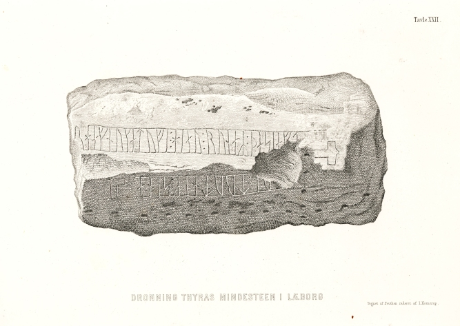
Diese Zeichnung von Christian Olavius Zeuthen (*10.09.1812 - 23.06.1890, Architektur- und Kunstmaler) findet sich in dem 1875 veröffentlichten Buch von Jacob Kornerup (*19.11.1825 - 09.03.1913, dänischer Archäologe und Zeichner aus Roskilde) mit dem Titel "Kongehøiene i Jellinge og deres Undersøgelse efter Kong Frederik VII's Befaling i 1861" - siehe auch Fotoshow über den Reiter "Literatur"Der digitalen Sammlung des Nationalmuseums Kopenhagen entnommen - Lizenz: CC-BY-SA
Zeichnungen von Prof. Julius Magnus Petersen (*04.09.1827 - 31.01.1917, Archäologischer Zeichner und Restaurator - link-LIVES)
 Bildquelle: Fotografie
von 1903 von Fotograf Marius Christensen
(*24.6.1874 -
25.6.1907) -
Det Kgl. Biblioteks billedsamling - Lizenz:
Public Domain
Bildquelle: Fotografie
von 1903 von Fotograf Marius Christensen
(*24.6.1874 -
25.6.1907) -
Det Kgl. Biblioteks billedsamling - Lizenz:
Public Domain
finden sich in dem Runenwerk von Prof. P. G. Thorsen (*07.08.1811 - 06.05.1883, Bibliothekar, Runenforscher und Historiker - link-LIVES)
 Bildquelle: Fotografie zw.
1863-1900 von
Fotograf Budtz Müller (*26.12.1837 -
30.12.1884) -
Det Kgl. Biblioteks billedsamling - Lizenz:
Public Domain
Bildquelle: Fotografie zw.
1863-1900 von
Fotograf Budtz Müller (*26.12.1837 -
30.12.1884) -
Det Kgl. Biblioteks billedsamling - Lizenz:
Public Domain
De danske runemindesmærker beskrevne og forklarede, anden Afdeling, Jyllands Runemindesmærker, I. Afbildninger, 1879 - Nr. 6-7ff. - Google Scan. In seinem Band II, Text, 1880, macht er auf den S. 15-18 Ausführungen.
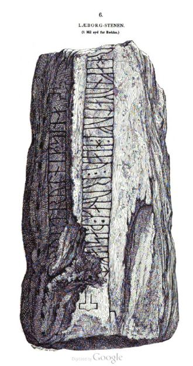
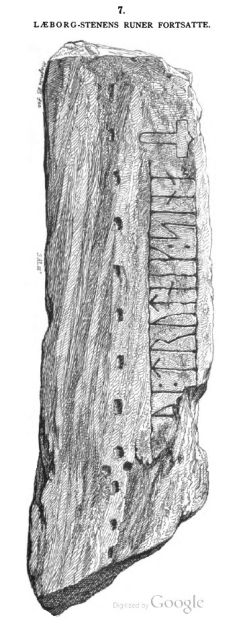
P. G. Thorsens Nachlass (Bezeichnet als: P. G. Thorsens optegnelser, tegninger m.m. vedrørende runer og runemindesmærker - überführt aus der Kopenhagener Universitätsbibliothek 1929 - Gemäß Ministerialschreiben vom 04.03.1929; früher benannt als Additamenta 612 kvart) - befindet sich heute in der Königlichen Bibliothek in Kopenhagen unter NKS 3296 kvart (in mehreren einzelnen Pappschachteln). In der Pappschachtel Nr. 17 wird diese Zeichnung von Magnus Petersen, datiert auf den 06.09.1871, verwahrt, die augenscheinlich später als Druckvorlage - siehe oben - diente.
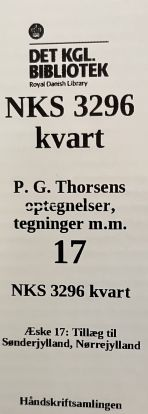

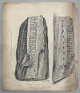
Prof. Ludv. F. A. Wimmer (*07.02.1839 - 29.04.1920, Philologe und Runenforscher - link-LIVES)
Bildquelle:
Fotografie zw. 1877-1900 von Fotograf Hansen & Weller
-
Det Kgl. Biblioteks billedsamling - Lizenz:
Public Domain
De danske runemindesmærker undersøgte og tolkede af Ludv. F. A. Wimmer, Andet Bind, Runestenene i Jylland og på øerne. 1899-1901 - Nr. 6, S. 38-54ff. - eigener Scan - aufgenommen. Ludv. F. A. Wimmer hat den Runenstein persönlich vor Ort am 20. Juli 1878, 06.07.1882 und am 26.07.1892 immer in Begleitung von Magnus Petersen untersucht.
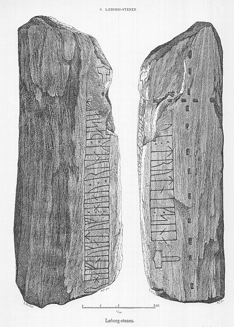
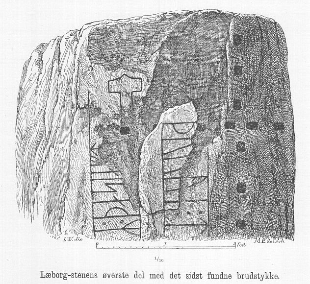
Ludv. F. A. Wimmer hat seine jahrelangen Aufzeichnungen der
"Kgl.
Bibliotek" in
Kopenhagen überlassen. Ein
Verzeichnis darüber wurde 1915 in Buchform herausgegeben -
In seinen Unterlagen in der Königlichen Bibliothek befinden sich unter "III - Originaltegninger af de danske Runemindesmærker, udførte paa Undersøgelsesrejserne af Magn. Petersen og kontrollerede paa Stedet af Ludv. Wimmer, samt Prøvetryk af de paa Grundlag af de nævnte Tegninger, Aftryk o. s. v. til De danske Runemindesmærker" udførte Afbildninger med Wimmers Rettelser" zu dem Runenstein von Læborg unter der Nr. 23 diese handschriftlichen Aufzeichnungen von 1878 und 1892, die ich am 27.09.2022 fotografieren durfte.


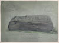 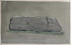 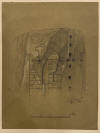 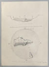 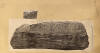 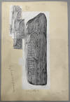 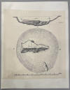


Die ersten beiden Zeichnungen - von herausragender zeichnerischer Qualität - sind handsigniert von Magnus Petersen (*04.09.1827 - 01.02.1917, Archäologischer Zeichner und Restaurator) mit Datum vom 20.07.1878. Die weitere Zeichnung von dem eingepassten kleinen Steinstück stammt auch von ihm und ist vom 26.07.1892. Datiert auf den 06.07.1872 ist eine andere Zeichnung von ihm und zeigt die ursprüngliche Fundstelle mit Maßangaben. Die anderen Blätter sind quasi die Arbeitsblätter von Ludv. F. A. Wimmer mit seinen Anmerkungen und Verbesserungen. Diese tollen Darstellungen in den Händen halten und begutachten zu dürfen war ein besonderes Erlebnis für mich. Aus all dem entstanden dann die Druckvorlagen für das große Runenwerk von Ludv. F. A. Wimmer.
Dieses Foto aus dem Jahr 1930 zeigt den Uhrmacher und Amateurfotograf Thomas Ludvig Thomsen (*21.03.1867 - 28.02.1935 - link-LIVES) aus Kolding mit seiner Kamera. Er hat das alte Foto einer Kopie des Runensteins, die sich auf Schloss Koldinghus befindet, um 1925 aufgenommen.
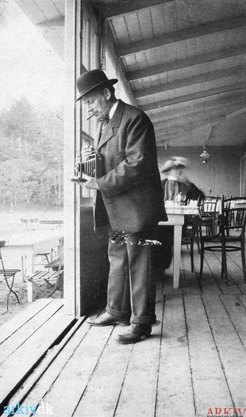
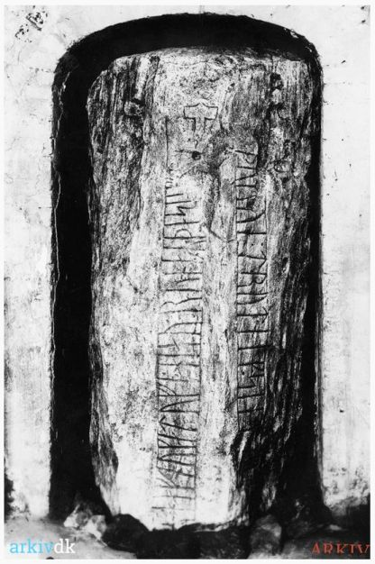
Quelle: https://arkiv.dk/vis/2646433 - 29.03.2022 - unveränderte Wiedergabe.Dieses Foto ist durch Erik Moltke (*04.04.1901 - 19.10.1984, Runologe, Historiker - link-LIVES)
 Bildquelle: Scan von Buchumschlag "Runerne i Danmark og ders
oprindelse" - Erik Moltke - 1976 - Lizenz:
CC-BY-SA
Bildquelle: Scan von Buchumschlag "Runerne i Danmark og ders
oprindelse" - Erik Moltke - 1976 - Lizenz:
CC-BY-SA
aufgenommen worden - Datum: laut Lis Jacobsen/Erik Moltke - Danmarks Runeindskrifter - 1942 - Text, S.51, vom 20.04.1931 oder vom 01.05.1935.
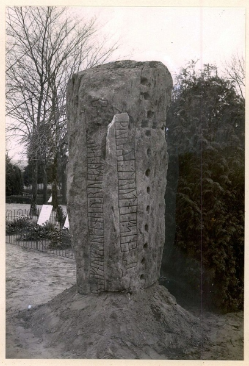
Der digitalen Sammlung des Nationalmuseums Kopenhagen entnommen - Lizenz: CC-BY-SA
Im Vorfeld zu dem 2016 erschienenen Buch von Lisbeth M. Imer (*1973, Runologin am Nationalmuseum Kopenhagen) "Danmarks Runesten - en fortælling" reiste sie mit dem Fotografen Roberto Fortuna zur Bestandsaufnahme durch die Lande. Dieser hat die Runensteine abends bei Dunkelheit mit Schräglicht aufgenommen und darüber wirklich herausragende Fotos erzielt. Diese Aufnahme entstand am 08.11.2011.
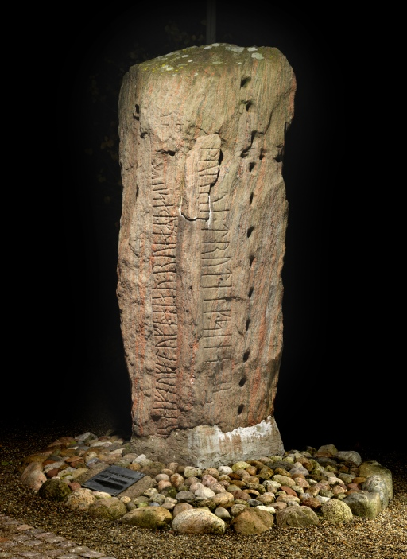
Der digitalen Sammlung des Nationalmuseums Kopenhagen entnommen - Lizenz: CC-BY-SA
Die Informationen zu diesem Runenstein aus der dänischen Runendatenbank finden sich hier.
Der entsprechende Eintrag in "Fund og Fortidsminder" ist hier verlinkt. Darin ist inzwischen dieser Zustandsbericht des Steinrestaurators Leif Vognsen aus dem Jahr 2018 eingebettet.
Über die Webseite "Runes" - ein Forschungsprojekt der Akademie zu Göttingen - kann man diese Informationen zum Runenstein von Læborg abrufen.
Auf den Webseiten des Nationalmuseum in Kopenhagen - Danmarks Kirker - kann man u.a. eine in dänischer Sprache gehaltene 22-seitige, bebilderte Abhandlung als pdf-Datei zur Baugeschichte/Innenausstattung der Kirche von Læborg aus den Jahren 1991-94 abrufen.
Einige Fotos meiner 2013er Wikingertour vom 20.08.2013 habe ich hier aufbereitet:
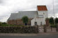 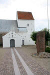 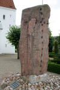 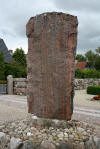 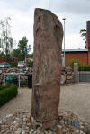


Hier nun drei Detailaufnahmen von oben nach unten:
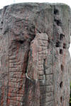 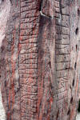 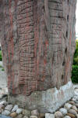


Im Rahmen meiner 2022er Jütland Wikingertour nahm ich mir mal wieder die Zeit und war am Montag, 30.05.2022, vor Ort. Dabei konnte ich in Læborg diese Fotografien anfertigen:
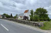 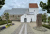 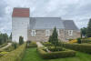 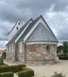


Literaturhinweise:
Erik Moltke - Runerne i Danmark og deres oprindelse - 1976 - S. 185, 222 u.a.
Erik Moltke - Runes and their origin - Denmark and elsewhere - 1985 - S. 228, 247 u.a.
Danmarks runesten - Runesten i landskabet - en registrant - Miljøministeriet - Skov- og Naturstyrelsen - 1992 - S. 77
Düwel, Klaus - Runenkunde - 3. Auflage, 2001, Sammlung Metzler, Band 72 - S. 111
Gunhild Øeby Nielsen - De danske runestens oprindelige plads - KUML 2005 - S. 121-144 - darin S. 127
Gunhild Øeby Nielsen - Runesten og deres fundforhold - 2007 - Nr. 23 auf der S. 205
Sawyer, Birgit - The viking-age runestones: custom and commemoration in early medieval Scandinavia - 2008 - S. 158ff. Excursus - The tug-of-war over Thyre
Imer, Lisbeth M. - The Danish runestones when and where? - Danish Journal of Archaeology, 3:2, 2014, S.164-174
Søgaard, Lise Kabell - Fra en sten med nogle runebogstaffuer på til skattet kulturarv - Kristeligt Dagblad - 24.02.2021 Online abrufbar